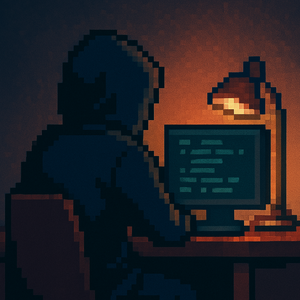

Adam Khalil
Senior CS @ Georgia Tech · Trading · Algorithms · HPC · ML · Statistics
About
I am a senior at Georgia Tech studying Computer Science, fascinated by the intersection of trading, algorithms, high performance computing, machine learning, and statistics. I enjoy building fast, reliable systems and thinking probabilistically about markets and data. I’m particularly interested in low-latency infrastructure, quantitative research workflows, and applying rigorous statistical methods to real-world decision making.